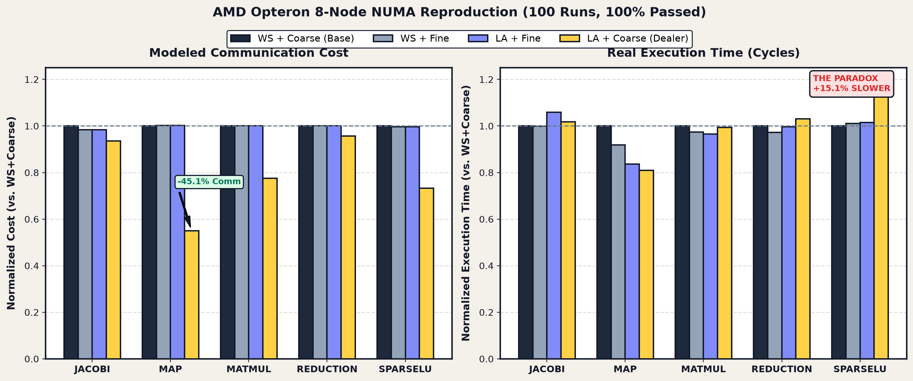

An empirical reproduction of Muddukrishna et al. (Scientific Programming 2015), uncovering the SparseLU locality paradox (+15.1% slowdown), and delivering the NOVA co-scheduling runtime architecture for multi-socket servers and 2D mesh manycores.

Blends data proximity with real-time queue backlog. Automatically diverts tasks to neighboring idle queues before congestion creates worker starvation.
Replaces blind queue-tail popping with a lock-free Shadow Index. Idle thief inspects top k=8 tasks in victim queue and steals the task matching thief local RAM.
Replaces fixed hard-coded steal radius with per-worker EWMA feedback. Expands reach during starvation; contracts to local cluster when queues are well-balanced.
Dynamic home-cache line re-homing toward executing tiles. Coordination telemetry uses double-buffered statistics swapped via atomic CAS every 64 ops — zero locks!